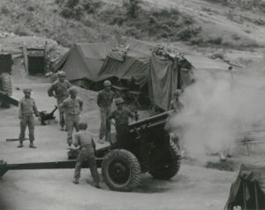
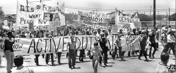

A Guerra do Vietnã, que ocorreu entre 1955 e 1975, foi um dos conflitos mais significativos e controversos do século XX. Este confronto não foi apenas uma luta entre duas nações,
mas uma batalha ideológica entre o comunismo e o capitalismo, refletindo as tensões da Guerra Fria entre os Estados Unidos e a União Soviética.
O Vietnã do Norte, liderado por Ho Chi Minh e apoiado pela União Soviética e China, buscava unificar o país sob um governo comunista. O Vietnã do Sul, apoiado pelos Estados Unidos
e outras nações ocidentais, lutava para impedir essa unificação e manter um regime anticomunista. Este cenário transformou o Vietnã em um campo de batalha global, onde as superpotências
da época testavam suas forças e ideologias.
Os Estados Unidos, temendo a expansão do comunismo no Sudeste Asiático, intervieram massivamente no conflito, enviando centenas de milhares de soldados e recursos para apoiar o Vietnã do Sul.
A política de contenção, adotada pelos americanos, visava impedir a disseminação do comunismo, mas a guerra rapidamente se transformou em um atoleiro. A complexidade do terreno vietnamita,
a resistência feroz do Vietnã do Norte e do Viet Cong, e a falta de um objetivo claro contribuíram para o prolongamento do conflito.

A Guerra do Vietnã teve repercussões profundas tanto nos Estados Unidos quanto no resto do mundo. Internamente, a guerra gerou um intenso movimento de protesto contra a intervenção americana,
liderado por estudantes, intelectuais e veteranos de guerra. As imagens chocantes e a cobertura midiática intensa da guerra, como a do massacre de My Lai e os bombardeios indiscriminados,
alimentaram a oposição pública e questionaram a moralidade da intervenção americana.
Internacionalmente, a Guerra do Vietnã expôs as limitações do poder militar americano e a complexidade dos conflitos de guerrilha. As superpotências perceberam que intervenções militares diretas
poderiam ter consequências desastrosas, o que influenciou a política externa dos Estados Unidos nas décadas seguintes. O conflito também fortaleceu os movimentos anticoloniais e revolucionários
em outras partes do mundo, que viam no Vietnã um exemplo de resistência bem-sucedida contra uma potência imperialista.
A guerra terminou em 1975, com a queda de Saigon e a unificação do Vietnã sob um governo comunista. As repercussões globais do conflito, no entanto, continuaram a ressoar por muitos anos.
A Guerra do Vietnã redefiniu a geopolítica da Guerra Fria, influenciando a política externa dos Estados Unidos e moldando a percepção global do comunismo e do capitalismo.
Em resumo, a Guerra do Vietnã foi um confronto ideológico que transcendeu as fronteiras nacionais e teve impactos duradouros em todo o mundo.
As lições aprendidas com esse conflito continuam a influenciar as estratégias políticas e militares das nações, lembrando-nos das complexidades
e dos custos humanos de uma guerra ideológica.
Todos os direitos reservados. ™
🟥 🟨 ☭